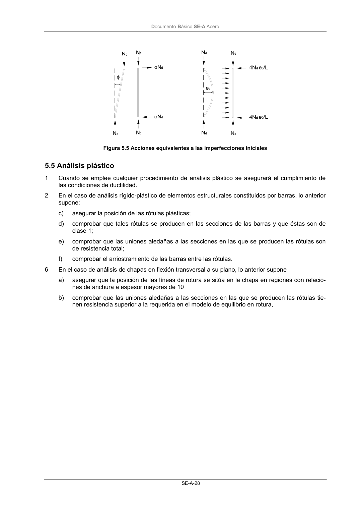

DB-SE-A Acero · edición 2007-10-23 · capa oficial
Documento DB-SE-A-oficial · SHA-256 del PDF 9ed9ea694aabfbda3bfbbef40dfe9223fde05d13c35bc2ba9751e5a96a22a64f
Copia fiel del PDF fuente · Fuente oficial
Ficha de la disposición en la fuente oficial
Formatos: JSON del segmento · Markdown
5.5 Análisis plástico 1 Cuando se emplee cualquier procedimiento de análisis plástico se asegurará el cumplimiento de las condiciones de ductilidad. 2 En el caso de análisis rígido-plástico de elementos estructurales constituidos por barras, lo anterior supone: c) asegurar la posición de las rótulas plásticas; d) comprobar que tales rótulas se producen en las secciones de las barras y que éstas son de clase 1; e) comprobar que las uniones aledañas a las secciones en las que se producen las rótulas son de resistencia total; f) comprobar el arriostramiento de las barras entre las rótulas. 6 En el caso de análisis de chapas en flexión transversal a su plano, lo anterior supone a) asegurar que la posición de las líneas de rotura se sitúa en la chapa en regiones con relacio- nes de anchura a espesor mayores de 10 b) comprobar que las uniones aledañas a las secciones en las que se producen las rótulas tie- nen resistencia superior a la requerida en el modelo de equilibrio en rotura, DocumentoBásico SE-A Acero SE-A-29
